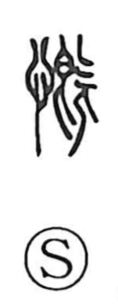

慨

Kun: | On: gai
deplore ・ lament ・ sigh
Explanation
A phono-semantic character built on the phonetic 既 (ancient form 旣). In that old form, 旡 depicts a person with 自, a piece of tableware, set before him; having eaten his fill, he turns away and belches, which gave 既 the sense of “already, finished.” When the heart radical 心 was added to this image, the bodily motion came to be read as an emotional gesture—a deep, regretful sigh—so the character took on the meanings “to deplore, to lament.” By extension it can also convey indignant anger or mournful sorrow.